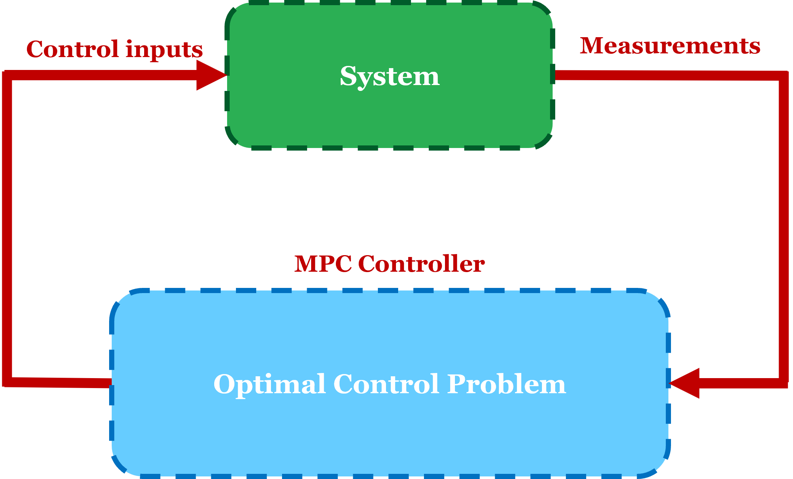
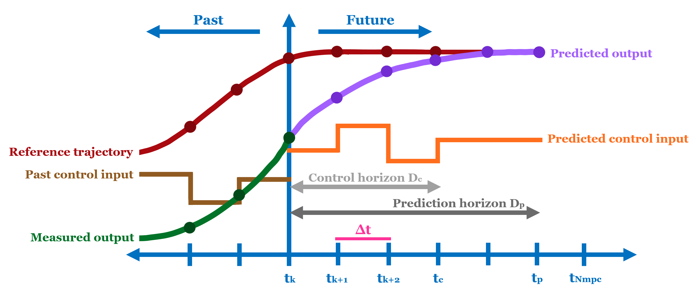
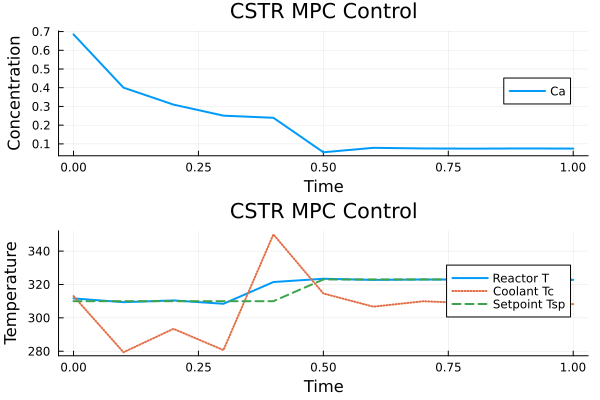

Re-solve Tutorial
There are settings where one may want to repeatedly solve problems defined in InfiniteOpt, such as in model predictive control. To support this, InfiniteOpt provides a re-solve framework that enables model updates between solves without rebuilding the backend or reinitializing the solver. This is facilitated through the following APIs:
set_parameter_valuefor updating parameters and parameter functionswarmstart_backend_start_valuesfor warmstarting the backend using a previous solution
As a result, we get a persistent backend and solver instance across subsequent solves, reducing initialization overhead and improving performance.
Below, we demonstrate how to do efficient re-solves via model predictive control of a continuous stirred tank reactor (CSTR). For re-solving on GPUs, see the InfiniteExaModels section.
Preliminaries
Software Setup
First, we need to make sure everything is installed. This will include:
- installing Julia
- installing
InfiniteOpt.jl - installing wanted optimizers e.g.,
Ipopt.jl - installing
Plots.jlfor plotting results
See Installation for more information.
Problem Formulation
Consider a model predictive control (MPC) problem over a time domain $D_{mpc} = [t_{0}, t_{f}]$, consisting of $N_{mpc}$ control steps with a control interval of $\Delta t$. At each control step $t_k$ for $k \in \{1, 2, ..., N_{mpc}\}$, an optimal control problem is solved to predict system behavior and determine the optimal input for the next control step. As such, this sets up the stage for optimal control re-solves. See below for a diagram of the MPC workflow:


We define our optimal control problem over the prediction horizon $\mathcal{D_p} = [0, t_p]$, where the objective is set to track a setpoint $T_{sp}(t)$. We also define the control horizon $\mathcal{D_c} = [0, t_c]$, where $t_c \leq t_p$, representing the subset of $\mathcal{D_p}$ over which the control input is allowed to vary. Here is the full optimal control formulation:
\[\begin{aligned} &&\underset{C_A(t), T(t), T_c(t)}{\text{min}} &&& \int_{t \in \mathcal{D_p}} (T(t) - T_{sp}(t))^2 dt\\ &&\text{s.t.} &&& C_a(0) = C_{A}(t_k)\\ &&&&& T(0) = T(t_k)\\ &&&&& k = k_0 \exp\left(\frac{-E_R}{T(t)}\right), & \forall t \in \mathcal{D_p}\\ &&&&& r_A = kC_A(t),& \forall t \in \mathcal{D_p}\\ &&&&& \frac{\partial C_A(t)}{\partial t} = \frac{F(C_f - C_A(t)) - Vr_A}{V}, & \forall t \in \mathcal{D_p}\\ &&&&& \frac{\partial T(t)}{\partial t} = \frac{F\rho c_p(T_f - T(t)) + r_AH_RV + U_A(T_c(t) - T(t))}{\rho c_p V}, & \forall t \in \mathcal{D_p}\\ &&&&& T_c(t) = T_c(t_c), & \forall t \in \mathcal{D_p} \setminus \mathcal{D_c}\\ &&&&& C_A(t) \geq 0, & \forall t \in \mathcal{D_p}\\ &&&&& 273.15 \leq T(t) \leq 400, & \forall t \in \mathcal{D_p}\\ &&&&& 250 \leq T_c(t) \leq 350, & \forall t \in \mathcal{D_p}\\ \end{aligned}\]
Here, our state variables are concentration $C_A(t)$ and reactor temperature $T(t)$, while the control input is the jacket temperature $T_c(t)$. There is also a constraint to keep input $T_c(t)$ constant beyond the control horizon $D_c$. Overall, this results in a dynamic model based on time $t$.
Problem setup
Parameter specification
Before moving on, we'll need to define the necessary constants and problem parameters. We'll define the following in our Julia session (these could also be put into a script as shown later on):
julia> Δt = 0.1; t0 = 0; tf = 1; tp = 3; tc = 2.5; # set MPC simulation parameters
julia> Dmpc = t0:Δt:tf; Dp = 0:Δt:tp; # set problem domains
julia> states = [0.9, 305]; # set the initial conditions for state
julia> F, V, rho, cp, Hr, E, k₀, Ua, cf, Tf = [100, 100, 1000, 0.239, 5e4, 8750, 7.2e10, 5e4, 1.0, 350]; # set the problem parametersWe'll also create a function for our temperature setpoint $T_{sp}(t)$, which is defined below:
\[T_{sp}(t) = \left\{ \begin{aligned} && 310, & \quad t_0 \leq t < 0.7 \\ && 323, & \quad 0.7 \leq t < 1.3 \\ && 318, & \quad 1.3 \leq t \leq t_f \\ \end{aligned} \right.\]
julia> function setpoint(t, offset)
t += offset
if t < 0.5
return 310
elseif t < 1.3
return 323
else
return 318
end
end;Note that an offset argument is added to ensure the setpoint function returns accurate values depending on what control step $t_k$ the problem is posed at.
Problem model
From here, we'll initialize our InfiniteModel, using Ipopt as the optimizer:
julia> using InfiniteOpt, Ipopt;
julia> model = InfiniteModel(TranscriptionBackend(Ipopt.Optimizer, update_parameter_functions = true))
An InfiniteOpt Model
Feasibility problem with:
Finite parameters: 0
Infinite parameters: 0
Variables: 0
Derivatives: 0
Measures: 0
Transformation backend information:
Backend type: TranscriptionBackend
Solver: Ipopt
Transformation built and up-to-date: falseNote that we also set the keyword argument update_parameter_functions = true. This is only necessary if you plan on updating parameter functions while working with TranscriptionBackends. In this case, we will need it to update our setpoint function $T_{sp}(t)$. Learn more about TranscriptionBackends on our Model Transcription page.
Next, let's make finite parameters via @finite_parameter to represent initial conditions for $C_A$ and $T$. This will allow us to update them between solves via set_parameter_value:
julia> @finite_parameter(model, Ca0 == states[1]);
julia> @finite_parameter(model, T0 == states[2]);Next, we'll create an infinite parameter t to represent our time domain via @infinite_parameter.
julia> @infinite_parameter(model, t in [0, tp], supports = collect(Dp),
derivative_method = OrthogonalCollocation(3));Now we'll create a parameter function for $T_{sp}(t)$ via @parameter_function, enabling setpoint updates between solves. Here, we embed the setpoint function we created earlier, basing it off the infinite parameter t. Note that tk is also included as the control step offset:
julia> @parameter_function(model, Tsp == t -> setpoint(t, tk))
Tsp(t)Continuing on, we define our InfiniteOpt problem as normal:
julia> @variable(model, 0 ≤ Ca, Infinite(t), start = states[1]);
julia> @variable(model, 273.15 ≤ T ≤ 400, Infinite(t), start = states[2]);
julia> @variable(model, 250 ≤ Tc ≤ 350, Infinite(t), start = 300);
julia> @objective(model, Min, integral((T - Tsp)^2, t))
∫{t ∈ [0, 3]}[T(t)² - 2 Tsp(t)*T(t) + Tsp(t)²]
julia> @constraint(model, Ca(0) == Ca0)
Ca(0) - Ca0 = 0
julia> @constraint(model, T(0) == T0)
T(0) - T0 = 0
julia> @expression(model, k, k₀ * exp(-E/T))
7.2e10 * exp(-8750.0 / T(t))
julia> @expression(model, rate, k*Ca)
7.2e10 * Ca(t) * exp(-8750.0 / T(t))
julia> @constraint(model, deriv(Ca, t) == (F*(cf - Ca) - V*rate)/V);
julia> @constraint(model, deriv(T, t) == (1/(rho * cp * V)) * (F * rho * cp * (Tf - T) + V * Hr * rate + Ua * (Tc - T)));To add a constraint for the control horizon, we can use DomainRestriction.
julia> control_func(t_c) = (tc < t_c ≤ tp); # Function for domain values
julia> control_domain = DomainRestriction(control_func, t); # Create domain restriction for infinite parameter t
julia> @constraint(model, Tc == Tc(tc), control_domain); # Add constraint defined on restricted domainWe also call constant_over_collocation on our control variable Tc to address any unwanted degrees of freedom introduced by internal collocation nodes from OrthogonalCollocation:
julia> constant_over_collocation.(Tc, t);That's it for defining our InfiniteOpt problem! Now, let's solve via optimize!:
julia> tk = 0; # Offset for first control step
julia> set_silent(model); # Repress solver output
julia> optimize!(model)We can check how many iterations the solver took via barrier_iterations:
julia> barrier_iterations(model)
11Simulating the system
Now we'll extract the input for the next control step via value:
julia> Tc_opt = value.(Tc)[2];From here, Tc_opt will be used to simulate the system forward and get up-to-date states for updating initial conditions. For this tutorial, we'll use a dummy function as follows:
julia> function sim_func(x, u, dt)
Ca, T = x
Tc = u
k = k₀ * exp(-E/T)
rate = k * Ca
dCa = F/V * (cf - Ca) - V * rate
dT = (1/(rho * cp * V)) * (F * rho * cp * (Tf - T) + V * Hr * rate + Ua * (Tc - T))
return x .+ dt .* [dCa, dT]
end;
julia> states = sim_func(states, Tc_opt, Δt); # update statesOutside of this tutorial, users should replace sim_func with their system model. For example, one could choose to set up and solve an ODE problem via DifferentialEquations.jl.
Re-solves
Updating the model
Now we need to update our model for the next solve! First, we update our control step accordingly:
julia> tk += Δt;We then update the start values via warmstart_backend_start_values. This will use the previous solution to warmstart all possible variables (e.g., primal, dual, etc...).
julia> warmstart_backend_start_values(model);This will only update the start values in the backend. The start values in the InfiniteModel will remain the same.
We'll also update the initial condition parameters using set_parameter_value.
julia> set_parameter_value(Ca0, states[1]);
julia> set_parameter_value(T0, states[2]);Lastly, we'll need to update the setpoint parameter function, which can also be done via set_parameter_value. We'll create a new function Tsp_new with an updated offset value for the new control step. Then we can update Tsp with Tsp_new.
julia> Tsp_new = (t) -> setpoint(t, tk);
julia> set_parameter_value(Tsp, Tsp_new);The new function must have the same infinite parameter format as the original parameter function.
Now we can call optimize! again to solve our updated model!
julia> optimize!(model)
julia> barrier_iterations(model)
16The re-solve framework's efficiency is based on the idea that the problem structure remains the same between solves (AKA no new variables or constraints are added). If changing the structure or using APIs other than warmstart_backend_start_values or set_parameter_value for updating, then a new backend and solver instance will be made from scratch.
Performance tips
Given a warmstart, we can also reduce the number of iterations by decreasing certain solver options via set_optimizer_attribute. Here, bound_push and bound_frac are solver options that determine how much the initial point might have to be adjusted to be sufficiently inside the problem bounds. Since our warmstart is presumably close to the actual solution, we can decrease both values for better performance. We can also decrease the initial barrier parameter mu_init for the same reason.
julia> set_optimizer_attribute(model, "bound_push", 1e-8); # Desired minimum distance from intial point to bounds
julia> set_optimizer_attribute(model, "bound_frac", 1e-8); # Desired minimum relative distance from initial point to bounds
julia> set_optimizer_attribute(model, "mu_init", 1e-11); # Initial barrier parameter valueNote that the chosen values here are not always good, as optimal values are problem dependent. Moving on, solving with these new solver options reduces the number of iterations:
julia> optimize!(model)
julia> barrier_iterations(model)
8Model Predictive Control Script
The steps outlined in the sections above can be captured in an MPC loop. This is summarized in the script below, along with a plot of the MPC solution values:
using InfiniteOpt, Ipopt, Plots
# DEFINE THE PROBLEM CONSTANTS
F = 100 # m³/s
V = 100 # m³
rho = 1000 # kg/m³
cp = 0.239 # J/kg K
Hr = 5e4 # Heat of reaction J/mol
E = 8750 # E/R K
k₀ = 7.2e10 # Pre-exponential factor 1/s
Ua = 5e4 # Heat transfer coefficient J/s K
cf = 1.0 # Feed concentration mol/m³
Tf = 350 # Feed temperature K
states = [0.9, 305] # Initial conditions
# DEFINE MPC PARAMETERS
t0 = 0 # Initial simulation time
tf = 1 # Final simulation time; keep it small with 10 iterations
Δt = 0.1 # Control interval
tp = 3 # Prediction endpoint
tc = 2.5 # Control endpoint
Dmpc = t0:Δt:tf # MPC Simulation domain
Dp = 0:Δt:tp # Prediction horizon
Dc = 0:Δt:tc # Control horizon
# DEFINE ARRAYS TO STORE SOLUTION VALUES
Ca_vals, T_vals, Tc_vals = [], [], []
# INITIALIZE RELEVANT FUNCTIONS
function setpoint(t, offset)
t += offset
if t < 0.5
return 310
elseif t < 1.3
return 323
else
return 318
end
end
function sim_func(x, u, dt)
Ca, T = x
Tc = u
k = k₀ * exp(-E/T)
rate = k * Ca
dCa = F/V * (cf - Ca) - V * rate
dT = (1/(rho * cp * V)) * (F * rho * cp * (Tf - T) + V * Hr * rate + Ua * (Tc - T))
return x .+ dt .* [dCa, dT]
end
# INITIALIZE THE MODEL
model = InfiniteModel(TranscriptionBackend(Ipopt.Optimizer, update_parameter_functions = true))
# INITIALIZE PARAMETERS & PARAMETER FUNCTIONS
@infinite_parameter(model, t ∈ [0, tp],
supports = collect(Dp),
derivative_method = OrthogonalCollocation(3))
@finite_parameter(model, Ca0 == states[1])
@finite_parameter(model, T0 == states[2])
@parameter_function(model, Tsp == t -> setpoint(t, 0))
# INITIALIZE THE VARIABLES
@variables(model, begin
0 ≤ Ca, Infinite(t), (start = states[1])
273.15 ≤ T ≤ 400, Infinite(t), (start = states[2])
250 ≤ Tc ≤ 350, Infinite(t), (start = 300)
end)
# SET THE OBJECTIVE
@objective(model, Min, ∫((T - Tsp)^2, t))
# SET THE INITIAL CONDITIONS
@constraint(model, initialCa, Ca(0) == Ca0)
@constraint(model, initialT, T(0) == T0)
# SET THE PROBLEM CONSTRAINTS
@expression(model, k, k₀ * exp(-E/T))
@expression(model, rate, k * Ca)
@constraint(model, ∂(Ca, t) == (F * (cf - Ca) - V * rate)/V)
@constraint(model, ∂(T, t) == (1/(rho * cp * V)) * (F * rho * cp * (Tf - T) + V * Hr * rate + Ua * (Tc - T)))
# SET THE CONTROL HORIZON CONSTRAINT
control_func(t_c) = (tc ≤ t_c ≤ tp)
control_domain = DomainRestriction(control_func, t)
@constraint(model, Tc == Tc(tc), control_domain)
# ADJUST DEGREES OF FREEDOM FOR CONTROL VARIABLES
constant_over_collocation.(Tc, t)
# SET MODEL TO SILENT MODE TO REPRESS SOLVER OUTPUT
set_silent(model)
# MPC LOOP
for tk in Dmpc
# SOLVE THE MODEL
optimize!(model)
# GET THE OPTIMAL INPUT & STORE IN ARRAY
Tc_opt = value.(Tc)[2]
push!(Tc_vals, Tc_opt)
# SIMULATE SYSTEM FORWARD & STORE STATES
states[1:2] = sim_func(states, Tc_opt, Δt)
push!(Ca_vals, states[1])
push!(T_vals, states[2])
# WARMSTART MODEL FOR NEXT SOLVE
warmstart_backend_start_values(model)
# UPDATE PARAMETERS
set_parameter_value(Ca0, states[1])
set_parameter_value(T0, states[2])
Tsp_new = (t) -> setpoint(t, tk + Δt)
set_parameter_value(Tsp, Tsp_new)
# ADJUST SOLVER PARAMETERS
set_optimizer_attribute(model, "bound_push", 1e-8)
set_optimizer_attribute(model, "bound_frac", 1e-8)
set_optimizer_attribute(model, "mu_init", 1e-11)
end
# PLOT THE RESULTS
t_vals = collect(Dmpc)
Tsp_vals = setpoint.(t_vals, 0)
p1 = plot(t_vals, Ca_vals, ylabel="Concentration", label="Ca", lw=2)
p2 = plot(t_vals, Array{Float64}([T_vals Tc_vals Tsp_vals]),
ylabel="Temperature",
label=["Reactor T" "Coolant Tc" "Setpoint Tsp"],
lw=2, ls=[:solid :dot :dash])
combinedPlot = plot(p1, p2, layout = (2, 1), xlabel="Time",
title="CSTR MPC Control", legend=:right)
Re-solves with InfiniteExaModels.jl
Software Setup
Alternatively, InfiniteExaModels.jl can be used to improve performance. Instead of a JuMP model, we can work with an ExaModel that exploits recurrent problem structure, cutting down on both model and automatic differentiation (AD) time. First, we'll need to ensure the following packages are installed:
InfiniteExaModels.jlNLPModelsIpopt.jl(if solving on CPU)
If solving on GPU, we'll also need to install:
MadNLP.jlCUDA.jlCUDSS.jl
Solving on CPU
When initializing the model, we specify an ExaTranscriptionBackend which will transcribe the InfiniteOpt problem into an ExaModel. For solving on CPU specifically, we use NLPModelsIpopt as the solver.
julia> using InfiniteExaModels, NLPModelsIpopt
julia> model = InfiniteModel(ExaTranscriptionBackend(NLPModelsIpopt.IpoptSolver));Solving on GPU
For GPU, we'll want to define an ExaTranscriptionBackend that employs a CUDABackend. We'll also use the MadNLPGPU module from MadNLP.jl for solving.
julia> using InfiniteExaModels, MadNLPGPU, CUDA
julia> model = InfiniteModel(ExaTranscriptionBackend(MadNLPSolver, backend = CUDABackend()));Since we'll be indexing Tc for the optimal control input, we'll also need to set allowscalar to true.
julia> CUDA.allowscalar(true);As mentioned in the Performance tips section earlier, we can be more performant by adjusting MadNLP solver options when given a warmstart. Note that the numerical value chosen here is different than what we originally chose when warmstarting with Ipopt. This highlights that the optimal value is not only problem-dependent, but also depends on the chosen solver.
julia> set_optimizer_attribute(model, "mu_init", 2E-2)That's all we need to change for the GPU setup! From here, we follow the same steps as the sections above to define the rest of our problem & solve.